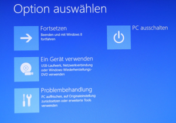
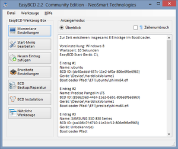
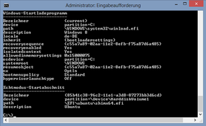
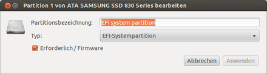

EFI Problembehebung
Dieser Artikel wurde für die folgenden Ubuntu-Versionen getestet:
Ubuntu 16.04 Xenial Xerus
Ubuntu 14.04 Trusty Tahr
Zum Verständnis dieses Artikels sind folgende Seiten hilfreich:
Seit mehreren Jahren kommen zunehmend Computer-Systeme auf den Markt, die mit einem Unified Extensible Firmware Interface (kurz (U)EFI) in der Mainboards-Firmware ausgestattet sind statt der lange Zeit genutzten BIOS-Firmware.
Daraus ergeben sich eine Reihe von Fragen bis hin zu ernsthaften Problemen zur Integration in und von  Ubuntu und dem Zusammenspiel mit Windows.
Ubuntu und dem Zusammenspiel mit Windows.
Dieser Artikel stellt eine Sammlung von Erfahrungen, Fragen und Abhilfen von den Autoren zusammen, die diese bei ihrer Arbeit gesammelt haben. Diese Sammlung erhebt keinen Anspruch auf Vollständigkeit - Erfahrungen kann man nicht lesen, die muss man selber machen!
Probleme bei der Installation¶
Gab es beim Versuch einer Installation Probleme, so sollte man das System mit einer Live-System gezielt untersuchen. Man sollte das Live-System im EFI-Modus starten und am Desktop die folgenden Maßnahmen ausführen.
NVRAM auslesen¶
Dazu öffnet man ein Terminal mit der Tastenkombination
Strg + Alt + T
und gibt in das Terminal [1] ein:
sudo apt-get install efibootmgr
sudo efibootmgr -v
Es wird eine Liste der Einträge im NVRAM angezeigt. Auch das Installations-Medium muss in dieser Liste sein. Eine typische Ausgabe ist beispielhaft
Boot0002* Ubuntu HD(1,800,32000,34911255-cfd8-43ce-a600-fb43636a9c2c)File(\EFI\trusty\shimx64.efi)
Dabei bedeuten:
Boot0002*
lfd. Nummer des Eintrages im NVRAM
das Sternchen verweist auf einen "aktiven" Eintrag
Ubuntu
Bezeichnung vom Betriebssystem
1,800,32000
*) Hinweis: Hier kann je nach Version vom efibootmgr statt 800 auch direkt GPT angezeigt werden.
34911255-cfd8-43ce-a600-fb43636a9c2c
entspricht der PARTUUID der Abfrage mit sudo blkid
\EFI\trusty\shimx64.efi
Angabe zum Pfad und zur Startdatei
Informationen zum UEFI¶
Eine weitere Informationsquelle sind die Angaben zum UEFI im System. Dazu gibt man in das Terminal [1] ein:
sudo dmidecode -t0 | grep -Ei "BIOS boot|UEFI"
Als Rückmeldung erhält man dann je nach System:
Computer verfügt über ein BIOS
BIOS boot specification is supported
Computer verfügt über ein UEFI mit CSM
BIOS boot specification is supported UEFI is supported
Computer verfügt nur über ein UEFI ohne CSM
UEFI is supported
Informationen zum Rechner¶
Informationen zur Hardware erhält man durch die Eingabe in das Terminal [1]:
sudo dmidecode -t1
Als Rückmeldung erhält man dann je nach Rechner - hier beispielhaft:
System Information Manufacturer: FUJITSU Product Name: ESPRIMO E710 E90+ Version: Serial Number: UUID: 3867E5DB-D219-E211-BDF2-DA9ED2C03A59 Wake-up Type: Power Switch SKU Number: S26361-Kxxx-Vyyy Family:
Information zu den Datenträgern¶
Man kann sich eine Übersicht über die vorhandenen Festplatten machen. Dazu öffnet man die Laufwerksverwaltung mit
Super -Taste antippen -> "Laufwerksverwaltung" ins Suchfeld eingeben -> ⏎
Dann öffnet sich ein Fenster, in dem links angezeigt wird, welche Laufwerke im Rechner sind, dass ist schon mal die erste Kontrolle. Das Fenster auf Vollbild stellen -> oben links.
Nun mit der linken  -Taste die Festplatte(n nacheinander) anklicken und sich die Aufteilung ansehen
-Taste die Festplatte(n nacheinander) anklicken und sich die Aufteilung ansehen
Obere Hälfte Angaben zur Festplatte
Untere Hälfte welche Partitionen gibt es
ganz unten nach dem Anklicken einer Partition kann man sich mit
"Partition bearbeiten"
weitere Details anzeigen lassen. Hierbei ist es bei einem vorhandenen Windows EFI-System wichtig, dass folgende zwei Partitionen zu finden sind:
"EFI-Systempartition"
"Reservierte Microsoft-Partition"
Als Ergänzung sollte man sich noch die Formatierung und Aufteilung der Datenträger im Terminal [1] ansehen mit
sudo parted -l
Eine hierbei auftretenden Fehlermeldungen muss man nun im Detail überprüfen - siehe dazu MischMasch Partitions-Tabelle.
Probleme und Lösungen¶
Der Windows-Bootmanager¶
|  |
| Auswahl Windows Bootmanager |
Meistens wird ein neues (U)EFI-Computer-System mit einem Windows 8 oder neuerem Betriebssystem ausgeliefert. In der Regel kennt man die Funktionstasten, um die verschiedenen Basis-Optionen zu erreichen. Sollte man diese nicht kennen oder ist man sich unsicher, so kann man diese Basis-Optionen auch über den Windows-Bootmanager erreichen.
Man startet das Windows (8 oder neuer) ganz normal und kann
in der Anmeldemaske (unten rechts)
am Desktop
das "Neustarten" einleiten / auswählen. Um damit in die für Ubuntu relevanten Optionen des Windows-Bootmanagers zu gelangen, muss dazu nur gleichzeitig die Umschalttaste gedrückt werden. In der folgenden Anzeige (siehe Abbildung) arbeitet man mit der -Taste nacheinander die "Apps" ab
"Ein Gerät verwenden"
Auswahl des Ubuntu-Eintrags aus dem NVRAM
"Problembehandlung"
Einstieg in das EFI-BIOS
EFI-Eintrag wurde gelöscht oder zerstört¶
Falls man es mal geschafft hat, seinen Eintrag im EFI-Menü zu zerstören, im UEFI-Setup diesen aus Versehen zu löschen oder aus anderen Gründen das System nicht mehr starten will, so kann man diesen Eintrag neu erstellen.
Variante eigenes System fremdstarten¶
Man benutzt einen für sein System mit den empfohlenen Erweiterungen erstellten EFI USB-Stick . Hat man die ISO-Datei auf einer DVD/CD gebrannt oder einen USB-Stick nach dieser Anweisung erstellt, so gilt:
Man bootet mit diesen Datenträgern im EFI-Modus und bearbeitet den ersten Eintrag im GRUB 2 Menü.
Dazu wechselt man mittels der E Taste in den Bearbeitungsmodus und löscht alle Zeilen und gibt ein:
1 2 | search --no-floppy --file --set=root /boot/grub/grubenv
configfile /boot/grub/grub.cfg
|
Experten-Info:
Je nach Filesystem kann die Position der Datei grub.cfg bzw. grubenv auf dem eigenen Rechner abweichen.
Bei einem BTRFS-Dateisystem kann der relevante Pfad /@/boot/grub/ lauten bzw. bei einer getrennten Boot-Partition ist der verkürzte Pfad /grub/ einzusetzen.
Nach und mit dieser Ergänzung kann man nun sein System direkt mit der F10 Taste starten und ganz normal seine Einträge zum Starten im Terminal [1] neu setzen mit:
sudo grub-install sudo update-grub
Variante chroot-Methode¶
Man benutzt einen für sein System erstellten EFI USB-Stick oder DVD/CD und startet damit seinen Rechner. Am Desktop stellt man eine chroot-Umgebung mit seinem System im Terminal [1] her. Da alle Befehle mit Rootrechten ausgeführt werden müssen, kann man das Benutzer-Terminal auf ein Root-Terminal umstellen mit
sudo -s
Ab jetzt werden alle Eingaben in das Terminal [1] ohne das voran gestellte sudo ausgeführt. Der Befehl
blkid
informiert über die beteiligten Festplatten und Partitionen. Die nachfolgenden Angaben / Annahmen sind an den entsprechenden Stellen an das eigene System anzupassen. Die Root-Partition wird eingebunden mit:
mount /dev/sdXX /mnt
Abweichung bei einem Btrfs-Dateisystem:
mount -o compress,ssd,subvol=@ /dev/sdXX /mnt
Ergänzung bei getrennter /boot-Partition:
mount /dev/sdXX /mnt/boot
Nun erfolgt noch das Einbinden der EFI-Partition
mount /dev/sdXX /mnt/boot/efi
Mit den folgenden Eingaben wird die chroot-Umgebung vorbereitet (am besten Kopieren -> Einfügen verwenden)
for i in dev dev/pts proc sys sys/firmware; do mount --bind /$i /mnt/$i; done
Nun kann man in das beschädigte System wechseln mit
chroot /mnt
und repariert dort die Einstellungen für die Datei /boot/grub/grub.cfg und den Eintrag für das EFI-Menü mit:
update-grub
und nun ohne Angabe einer Festplatte/Partition:
grub-install # Option = --verbose
Die Option --verbose bzw. kurz -v zeigt die Aktionen während der Abarbeitung an und sollte nur benutzt werden, wenn man den korrekten Ablauf überprüfen will. Nachdem man sich über die ausgeführten Aktionen informiert hat und diese für richtig befunden hat, kann man das System wieder verlassen mit zweimaligen Eingabe von
exit
Nach einem Reboot aus dem Livesystem sollte der Eintrag "ubuntu" ein Starten in das eigene System wieder erlauben. Am dortigen Desktop kann man dann, soweit erforderlich, weitere Informationen abfragen bzw. Korrekturen / Reparaturen ausführen.
Mein Ubuntu startet nicht¶
Nach einer Ubuntu EFI Installation erfolgt der Start von Ubuntu in der Regel automatisch. Es wird dazu ein Eintrag im NVRAM benutzt, der mit der Installation angelegt wurde.
Hinweis:
In der Regel legt der Ubuntu-Installer den Ubuntu Starteintrag im NVRAM so an, dass damit nach einem Reboot automatisch GRUB ausgeführt und damit auch Ubuntu automatisch gestartet wird.
Passiert dies nicht, kann das durch eine ungünstige Boot-Reihenfolge oder das gänzliche Fehlen des Starteintrags im NVRAM verursacht werden. Ersteres kann über das EFI-Menü umgangen werden und beides kann im EFI-BIOS-Setup korrigiert werden. Ist dieses aber nicht möglich, z.B. weil man nicht die zum Aufruf richtige Tastenkombination kennt, so kann man dies auch über Windows durchführen.
Ubuntu im Windows-Bootmanager starten¶
Nach dem Aufruf des Windows-Bootmanagers wählt man in der Auswahl der Optionen (siehe Abbildung) nacheinander die Apps
"Ein Gerät verwenden"
"ubuntu"
Nach der Auswahl mit der sollte das Ubuntu starten.
Anzeige des NVRAM¶
|  |
| EasyBCD Anzeige EFI-Partition |
Mit der Windows Anwendung EasyBCD kann man sich u.a. die Einträge im NVRAM anzeigen lassen, jedoch ist damit keine Ergänzung mit einem EFI-Eintrag um diese Bootoption im Windows Bootmanager möglich. Aber man erkennt, dass das Ubuntu auf dieser Partition eingerichtet wurde. Nun kann man den erforderlichen Booteintrag manuell generieren. Dazu ruft man am Windows Desktop "Eingabeaufforderung" (bcdedit funktioniert mit anderen Terminals nicht korrekt.) mit Adminrechten auf und gibt dort ein:
bcdedit /create /d "Mein Linux" /application bootsector
Ausgegeben wird eine Zeichenkette / UUID innerhalb geschweifter Klammern, zum Beispiel:
{ef8119c2-86bc-11dc-99e3-0019dbeb3cb3} Diese UUID muss man bei dem nächsten Befehl einmal sorgfältig von Hand zwischen die geschweiften Klammern eingeben.
bcdedit /set {UUID} device partition=\Device\HarddiskVolume1 Danach mit ↑ den vorherigen Eintrag wieder zurückrufen und dann die Parameter korrigieren auf
|  |
| ERGEBNIS MANUELLER EINTRAG |
bcdedit /set {UUID} path \EFI\ubuntu\grubx64.efi # oder shimx64.efi
bcdedit /displayorder {UUID} /addlast # oder /addfirst Am Ende lässt man sich das Ergebnis anzeigen mit
bcdedit /enum
und es sollte dann wie in der Abbildung aussehen. Damit erscheint dieses im Windows 7 als Auswahlzeile bzw. in Windows 8 als App, die dann (hoffentlich) das Ubuntu startet.
Hinweis:
Das secure-boot muss deaktiviert sein, weil ansonsten das Nachladen der erforderlichen Dateien abgeblockt wird.
Komme nicht ins UEFI¶
Nach dem Aufruf des Windows-Bootmanagers wählt man in der Auswahl der Optionen nacheinander die Apps
"Problembehandlung"
"Erweiterte Optionen"
"UEFI-Firmwareeinstellungen" -> Button "Neu Starten"
Danach startet Windows 8 in das Firmware-Setup (UEFI).
Mit DVD/CD oder USB-Stick¶
Man kann alternativ versuchen, das Firmware-Setup auch mit dem Ubuntu Installations-Medium aufzurufen - sofern dieses nicht von den Einstellungen im Setup abgeblockt wird. Bei einer CD/DVD oder einen mit der Laufwerksverwaltung bzw. dd erstellten USB-Stick wählt man am GRUB 2-Menü nach dem Start
mit ↓ zum Eintrag "Check disc for defects"
mit E den Editor aufrufen
und löscht mit ⌫ alle Zeilen
ergänzt dafür mit "fwsetup"
startet mit F10
und gelangt nach dem Reboot in das Firmware-Setup.
Ubuntu auf USB-Festplatte¶
Hat man bereits ein Ubuntu Betriebssystem im EFI-Modus auf einer (externen) Festplatte, so kann man die direkte Auswahl im GRUB 2-Menü benutzen. Diese Option ist allerdings erst ab Trusty Tahr gegeben.
Kurzes Aufflackern eines fallback.efi Fehlers¶
Bei manchen EFI-Geräten kann es passieren, dass das Gerät beim Booten nur die Grub-2-Shell anzeigt. Dies kann mehrere Ursachen haben, jedoch flackert kurz zuvor die Fehlermeldung Could not open "\EFI\BOOT\fallback.efi" auf, welche man eventuell nur erkennen kann, wenn man den Bildschirm mit einer Kamera abfilmt (z.B. dem Handy).
Diese Meldung deutet darauf hin, dass ein EFI Fallback Modus benötigt wird. Dazu reicht es bei vielen Geräten aus, die Datei(en) des normalen Modus in den Fallback Modus zu kopieren. Dazu führt man folgende Befehle von einer Live-CD aus:
EFI-Partition ermitteln:
sudo parted -l
EFI-Partition einhängen:
sudo mount /dev/sdXY /mnt ls -l /mnt/EFI
sdXY muss durch die ermittelte EFI-Partition angepasst werden, z.B. sda1 - mit dem zweiten Befehl ermittelt man die Schreibweise vom Verzeichnis Boot.
Wenn secure-boot aktiviert ist:
sudo cp -a /mnt/EFI/ubuntu/shimx64.efi /mnt/EFI/Boot/fallback.efi
Ohne secure-boot:
sudo cp -a /mnt/EFI/ubuntu/grubx64.efi /mnt/EFI/Boot/fallback.efi
Danach startet man neu, um den Erfolg der Maßnahme zu testen.
32bit UEFI - kein Start von USB möglich, Error 0xc000000f¶
Alle modernen Rechner besitzen heutzutage einen 64-bit-fähigen Prozessor. Bei einigen günstigen Tablets und Convertibles kann es jedoch vorkommen, dass trotz einer 64-bit-CPU nur ein 32-bit-UEFI installiert ist (Stand: 2017). Ein bereits vorinstalliertes Windows läuft dann ebenfalls als 32-bit-Version. (Zu erkennen in der Systemsteuerung bei den Systeminformationen.)
Beim Versuch einen USB-Stick mit der eigentlich passenden amd64.iso-Variante zu starten, erhält man aber eine der folgenden Fehlermeldungen. (Die i368.iso-Dateien funktionieren auf einem 64-bit-Prozessor nicht. Also muss man zur amd64.iso greifen.)
No USB-Boot(oder ähnlich)USB Boot failed(oder ähnlich)Error 0xc000000f(beim Windows Start)ubnldr.mbr kann nicht geladen werden(UNetbootin nach Installation der ISO auf lokaler Festplatte)g2ldr.mbr kann nicht geladen werden(Debian win32-loader)
In diesem Fall benötigt man noch eine zusätzliche bootia32.efi-Datei  , welche auf den USB-Stick ins Verzeichnis /EFI/BOOT/ kopiert werden muss.
Also: USB-LAUFWERK/EFI/BOOT/bootia32.efi
, welche auf den USB-Stick ins Verzeichnis /EFI/BOOT/ kopiert werden muss.
Also: USB-LAUFWERK/EFI/BOOT/bootia32.efi
Danach kann von USB-Stick gestartet werden und die Installation beginnen (Die Installation sollte mit bestehender Internetverbindung stattfinden, damit auch der passende Bootloader "grub-efi-ia32" nachgeladen werden kann).
Probleme mit Windows¶
Es kann passieren, dass das Windows nach einer Installation von Ubuntu bzw. nach Arbeiten mit Ubuntu nicht mehr richtig arbeitet. Das kann verschiedene Gründe haben. Andererseits gibt es auch Firmware (EFI), die das Starten vom installierten Windows erzwingt - und somit andere Betriebssysteme ignoriert.
Einige markante Probleme werden nachfolgend beschrieben.
EFI-Partition¶
Windows und auch Ubuntu starten scheinbar ohne Probleme - und doch erscheinen nicht erklärbare Probleme im laufenden Betrieb. Dazu wird unter Windows u.a. folgendes Fehlverhalten festgestellt bei der:
"Systemsicherung" , diese bricht mit einer Fehlermeldung ab
"Eingabeaufforderung" , diese verweigert Administratorrechte
|  |
| Einstellungen Parameter einer EFI-Partition |
Dann sollte man unter Ubuntu die Einstellungen der EFI-Partition zu
"Partitionstyp, Bezeichnung und Flags"
überprüfen. Dazu ruft man durch Antippen der Super -Taste und der Eingabe in das Suchfeld von
"Laufwerksverwaltung"
diese Anwendung auf und fragt die Festplatte, auf der sich die EFI-Partition befindet, nach den Parametern der EFI-Partition ab unter
"Partition bearbeiten"
Das Ergebnis muss (abgesehen von der Partitionsbezeichnung) die abgebildeten Einstellungen aufweisen. Diese sind, sofern erforderlich, anzupassen.
Hinweis:
Mit dem Werkzeug GParted lassen sich diese Parameter zwar abfragen, nicht jedoch korrekt setzen / einstellen!
Acer-Rechner¶
Um auf einem Acer-Rechner ein (weiteres) Betriebssystem installieren zu können, muss man die folgenden Schritte abarbeiten:
Vor der ersten Installation:
Das UEFI aufrufen (fälschlich wird dies oft als BIOS bezeichnet).
Funktionstaste siehe Handbuch
Mit → den Menüpunkt "Security" auswählen.
Mit ↓ das Submenü "Set Supervisor Password:" auswählen.
Mit ⏎ diese Einstellung aufrufen.
Ein Password eingeben. Wichtig:
merken bzw. aufschreiben
oder nach der Installation wieder entfernen.
Mit → den Menüpunkt "Boot" auswählen.
"Boot Mode:" auf [UEFI] setzen
"Secure Boot" auf [Enabled] setzen
Mit → den Menüpunkt Exit" auswählen.
UEFI über "Save Changes and Exit" verlassen.
Jetzt kann man das Installationsmedium einlegen (DVD/CD) bzw. einstecken (USB-Stick), auf der sich das zu installierende Betriebssystem befindet und den Rechner neu starten.
Mit der Funktionstaste (siehe Handbuch) das EFI-Menü aufrufen und das Installationsmedium für den UEFI-Modus auswählen. Die Installation erfolgt nun gemäß EFI Installieren.
Auf Acer-Rechnern wird nach einer korrekten UEFI-Installation Ubuntu bzw. der GRUB 2-Bootloader nicht angezeigt. Das ist unabhängig davon, ob noch ein weiteres Betriebssystem (z.B. Windows) installiert ist oder nicht.
Arbeitschritte nach der Installation:
In das UEFI wechseln.
Funktionstaste siehe Handbuch.
Mit → den Menüpunkt "Boot" (alternativ Bereich "Security") auswählen.
Mit ↓ das Submenü "EFI File Boot 0: Yes" auswählen.
Mit ⏎ diese Einstellung aufrufen.
Die folgenden Vorgaben sind je Rechner verschieden - also sinngemäß arbeiten.
z.B. auch -> "Select an UEFI file as trusted for executing".
"HDD0" wird angezeigt -> ⏎
"EFI" wird angezeigt -> ⏎
Mit ↓ bzw. ↑ "ubuntu" auswählen -> ⏎
Den Eintrag "shimx64.efi ..." auswählen -> ⏎
Eine Bezeichnung dafür eingeben -> ⏎
Mit → den Menüpunkt Exit" auswählen.
UEFI über "Save Changes and Exit" verlassen.
Nun kann man nach dem Reboot im GRUB 2-Menü Ubuntu auswählen. Wird nichts angezeigt, weil ausschließlich Ubuntu installiert worden ist, so muss man die Einstellungen in der /etc/default/grub entsprechend nachbearbeiten.
Ubuntu startet nur einmal¶
Nach der Installation bzw. nach einer Reparatur vom GRUB 2 wird das Grubmenü angezeigt und man kann alle angezeigten Optionen auch starten.
Sobald man Windows aufruft, startet es. Beim nächsten Start jedoch erscheint der Windows-Bootmanager - das Grubmenü kann nicht mehr ausgewählt werden.
Eine Überprüfung vom NVRAM ergibt dann, dass der Windows-Eintrag in der Bootreihenfolge an erster Stelle steht und meist, dass der Eintrag von Ubuntu gelöscht wurde.
Experten-Info:
Bei einigen Rechner geschieht dabei folgendes: Die Firmware löscht den Windows-Eintrag, wenn dieser nicht an erster Stelle in der Bootreihenfolge steht. Dies beeinträchtigt den Start von Grub nicht. Sobald Windows startet, bemerkt es den fehlenden Eintrag im NVRam, erstellt ihn neu und setzt ihn an die erste Stelle in der Bootreihenfolge. Dabei kommt es vor, dass der Ubuntu-Eintrag gelöscht wird. Wenn man den Windows-Booteintrag an erster Stelle belässt, aber auf inaktiv setzt, umgeht man das Problem.
Um das zu korrigieren, startet man ein Ubuntu Livesystem und arbeitet die Anweisung zur Reparatur ab. Nun sollten sowohl für Windows als auch für Ubuntu Einträge vorhanden sein, die Ausgabe mittels efibootmgr kann beispielhaft wie folgt aussehen:
BootOrder: 0004,0000,0001,0002,0003 Boot0000* Windows Boot Manager HD(1,800,32000,34911255... Boot0001* ... Boot0002* ... Boot0003* ... Boot0004* ubuntu HD(1,800,32000,34911255......
Nun muss man die Bootreihenfolge (Zeile "BootOrder") überprüfen, Windows muss hierbei an erster Stelle stehen, der Eintrag sollte aber deaktiviert sein. Dies ist in unserem Beispiel nicht der Fall, daher wird das wie folgt, korrigiert:
sudo efibootmgr -b 0000 -A sudo efibootmgr -o 0000,0004,0001,0002,0003
BootOrder: 0000,0004,0001,0002,0003 Boot0000 Windows Boot Manager HD(1,800,32000,34911255... Boot0001* ...
Da jetzt ein Eintrag - wenn auch deaktiviert - für das Windows an der ersten Stelle vorhanden ist, wird dieser zwar für den Aufruf im EFI-Menü ignoriert bzw. gar nicht angezeigt, aber von der Firmware als vorhanden anerkannt und damit kein neuer Eintrag generiert und das NVRAM beim Start vom Windows nicht mehr überschrieben.
Experten-Info:
Falls zwischen dem Eintrag für das Windows noch andere Einträge sind, kann man versuchen auch diese zu deaktivieren. Damit wird die Anzeige von GRUB 2 etwas beschleunigt.
Das Setzen von Einträgen im Terminal muss wie folgt ausgeführt werden (alternativ):
sudo efibootmgr -o 0000,0004,0001,0002,0003sudo efibootmgr -o 0,4,1,2,3,
Bei der Variante für den letzten Befehl muss das abschließende Komma immer gesetzt sein, da ansonsten die Auswertung (als HEX-Zahl) zu falschen Werten beim Setzen für das NVRAM führt.
Aufheben kann man das, sofern die Umstände das erfordern im Terminal [1] mit:
sudo efibootmgr -b 0000 -a
Danach kann man das Windows auch wieder über das EFI-Menü aufrufen
Booten aus dem Grubmenü¶
Nicht auf allen Rechnern mit aktiven secure-boot kann man aus dem GRUB_2 Menü das Windows direkt zum Booten aufrufen, obwohl der generierte Eintrag korrekt ist. Dabei sieht man die folgende bzw. eine sinngemäße Ausgabe auf dem Monitor:
/EndEntire file path: /ACPI(a0341d0,0)/PCI(2,1f)/UnknownMessaging(12)/HD (1,800,3200,55129134d8cfce43,a6,0)/ File (\efi\microsoft\boot)/ File (bootmgfw.efi) /EndEntire
Dieses ist begründet in der Hersteller spezifischen Aufbereitung des UEFI. Man kann dann nur
den Rechner ohne
secure-bootbenutzen (im UEFI deaktivieren - eingeschränkte Sicherheit)das Windows direkt über das EFI-Menü booten
im Terminal [1] das Windows voreinstellen
ein Skript in die /boot/grub/grub.cfg einbringen
Experten-Info:
Man sollte, da der Windows-Eintrag auf diesen Rechnern im GRUB_2 Menü ohnehin nicht korrekt arbeitet, diesen in der /etc/default/grub über das Einbringen der zusätzlichen Zeile
GRUB_DISABLE_OS_PROBER=true
deaktivieren!
Eine Alternative für betroffene Rechner, um das secure-boot weiterhin zu nutzen, ist das Setzen der Option --bootnext in einem Terminal [1] vor dem Herunterfahren aus dem Ubuntu, um so das Windows automatisch als nächstes zu starten.
Alternative 1¶
Experten-Info:
Ist man gezwungen, den Wechsel öfter auszuführen, kann man ein Skript erstellen, dass das EFI-Menü aufruft. Das nachfolgende Skript wurde z.B. auf einem SAMSUNG-Rechner mit obiger Fehlermeldung erfolgreich getestet.
Man kopiert die Datei /etc/grub.d/40_custom nach /etc/grub.d/30_efi-menu im Terminal [1] mit:
sudo cp -f /etc/grub.d/40_custom /etc/grub.d/30_efi-menu
und ergänzt die Kopie /etc/grub.d/30_efi-menu mit Rootrechten wie folgt (Zeilen 6 bis 8):
1 2 3 4 5 6 7 8 | #!/bin/sh exec tail -n +3 $0 # This file provides an easy way to add custom menu entries. Simply type the # menu entries you want to add after this comment. Be careful not to change # the 'exec tail' line above. menuentry 'EFI-Bootmenü aufrufen' { exit } |
Danach kann man das EFI-Menü über die GRUB 2-Auswahl und anschließend dort dann den Windows Boot Manager auswählen.
Alternative 2¶
Will man den Wechsel zum Windows direkt auszuführen, kann man die beispielhaften Skripte erstellen und in den beschriebenen Bereichen ablegen:
1 2 3 4 5 6 7 8 9 10 11 12 13 14 15 16 17 18 19 20 21 22 23 24 25 26 27 28 | #!/bin/sh # Diese Datei als # 'restart-windows' # ausführbar machen (unter 'Eigenschaften') und nach # ~/usr/local/sbin/' kopieren if ! mount | grep 'efivars' 2>/dev/null ; then notify-send "Achtung - kein EFI-Betriebssystem" "Diese Anwendung kann auf diesem Ubuntu nicht eingesetzt werden!" exit; fi if ! which gksu 2>/dev/null; then notify-send "'gksu' ist nicht vorhanden!" "Benutzen Sie 'sudo apt-get install gksu', um diese Anwendung zu installieren!"; exit; else [ ! `ls -la /bin | grep efibootmgr | cut -c 4` = 's' ] && gksu chmod +s /bin/efibootmgr 2>/dev/null; fi NEXTBOOT=$( efibootmgr | grep 'Windows' | cut -c 5-8 ) 2>/dev/null; if [ 'x${NEXTBOOT}' != 'x' ]; then efibootmgr -n ${NEXTBOOT} 2>/dev/null; gnome-session-quit --power-off; else notify-send "Abbruch - kein EFI Eintrag" "Das Windows kann nur direkt über das BIOS gestartet werden" fi exit; |
In Verbindung mit dem obigen beispielhaften Skript kann folgende Startdatei nützlich sein:
1 2 3 4 5 6 7 8 9 10 11 12 13 14 15 16 | ### **** Desktop-File **** # die folgende Sequenz in eine Datei kopieren und # z.B. als 'win-reboot.desktop' # nach '/.local/share/applications/' im Homeverzeichnis kopieren [Desktop Entry] Name[de]=Ins Windows booten Comment=Von Ubuntu direkt ins EFI Windows starten Exec=/usr/local/sbin/restart-windows Icon=Windows-Icon.png Terminal=false Type=Application Categories=System;Settings; MimeType=application; StartupNotify=true Keywords=Reboot;Windows |
Unter Verwendung eines Windows-Icon (nach ~/.icons im Homeverzeichnis kopiert) kann man das dann im Unity-Launcher platzieren oder über die Super -Taste aufrufen - bei den anderen Derivaten ist entsprechend den dortigen Vorgaben zu verfahren.
Spezialfall MBR-GPT-Mischmasch¶
Artikel für fortgeschrittene Anwender
Dieser Artikel erfordert mehr Erfahrung im Umgang mit Linux und ist daher nur für fortgeschrittene Benutzer gedacht.
Ein "GPT-MBR-Mischmasch" entsteht ganz leicht beim Herumprobieren von verschiedenen Installationen auf einem EFI-System. Dieses Herumprobieren wird dadurch provoziert, dass der Ubuntu-Installer - genauer gesagt das Paket os-prober - derzeit keine EFI-Installationen erkennt.
Beim Herumprobieren - sprich beim erneuten Installieren - werden dann in der Regel, Partitionstabellen nur neu angelegt. Beim Neuanlegen werden aber Strukturen einer alten anderen Partitionstabelle nicht gelöscht - zumindest sehr häufig nicht.
D.h. wenn man z.B. auf dem Datenträger bisher ein msdos-Partitionierungs-Schema hatte und legt dann ein GPT-Partitionierungs-Schema an, dann können Reste des msdos-Schemas erhalten bleiben, obwohl das neue GPT-Schema eingerichtet wird und an sich auch funktioniert. Das gilt noch mehr für den umgekehrten Fall, dass man erst ein GPT-Schema hatte und dann zum msdos-Schema wechselt.
Problem für den "normalen Nutzer" ist dabei, dass sowohl im Windows-Setup als auch im Ubuntu-Installer gar nicht oder nicht ausreichend transparent wird, welches Schema verwendet bzw. neu angelegt wird.
Erkennen eines MBR-GPT-Mischmasches¶
Das Vorliegen von msdos- und GPT-Strukturen auf ein und dem selben Datenträger erkennt man an der Ausgabe von parted:
ubuntu@ubuntu:~$ sudo parted -l Warning: /dev/sda contains GPT signatures, indicating that it has a GPT table. However, it does not have a valid fake msdos partition table, as it should. Perhaps it was corrupted -- possibly by a program that doesn't understand GPT partition tables. Or perhaps you deleted the GPT table, and are now using an msdos partition table. Is this a GPT partition table? Yes/No?
In GParted erkennt man es daran, dass keine Partitionen auf dem Datenträger angezeigt werden.
Auflösen des MBR-GPT-Mischmasches vor vollständiger Neuinstallation¶
Den MBR-GPT-Mischmasch kann man bei Neuinstallation auflösen indem man vor der Installation beide Strukturen vollständig entfernt. Das geht von Linux aus wie folgt:
Löschen des msdos-Schemas¶
sudo dd if=/dev/zero of=/dev/sdX count=2048
/dev/sdX ist dabei durch den Datenträger zu ersetzen, den man bereinigen möchte. Mit diesem Befehl wird der MBR und der dahinterliegende verborgene Bereich genullt, was für das Löschen des msdos-Schemas ausreichend ist.
Löschen des GPT-Schemas¶
Obwohl die primären GPT-Informationen auch innerhalb der ersten 2048 Sektoren liegen, reicht hier für ein sauberes Löschen der GPT-Struktur ein Nullen dieses Bereiches nicht aus. Ein vollständiges Löschen ist effizient nur mittels gdisk möglich:
sudo gdisk /dev/sdX
/dev/sdXdurch die zu bereinigende Platte ersetzen.gdisk präsentiert daraufhin wahrscheinlich die folgende Abfrage:
GPT fdisk (gdisk) version 0.8.1 Partition table scan: MBR: MBR only BSD: not present APM: not present GPT: present Found valid MBR and GPT. Which do you want to use? 1 - MBR 2 - GPT 3 - Create blank GPT Your answer:
Da man hier ohnehin alle Strukturen vom Datenträger löschen möchte, ist es in dem Fall egal, ob man 1 , 2 oder 3 drückt.
X drücken, um in das extra-functionality-Menü zu gelangen.
Z drücken, um etwaige Reste eines GPT-Schemas zu löschen.
Dabei beide Nachfragen mit Y bestätigen gdisk sollte anschließend selbständig schließen.
Alternativ könnte man auch den vollständigen Datenträger mit Nullen überschreiben lassen, was dann aber im Verhältnis viel länger dauern würde.
Wenn beide Strukturen gelöscht wurden, dann kann man wieder sauber neu installieren, wobei man dabei unbedingt die Hintergründe einer Installation auf einem EFI-System beachten muss. Siehe dazu oben ab Vorbemerkung).
Auflösen des MBR-GPT-Mischmasches im bereits installierten und an sich lauffähigen System¶
Auch wenn das System bereits installiert ist, kann man den Mischmasch aus msdos- und GPT-Strukturen beseitigen. Voraussetzung ist, dass man sich zunächst gdisk auf dem System installiert.
Achtung!
Auch wenn gdisk in aller Regel zuverlässig arbeitet, stellen Operationen am Partitionierungs-Schema einen sehr risikoreichen Vorgang dar, bei dem es im schlimmsten Fall zu Datenverlust kommen kann. Wichtige Daten müssen daher vor der Operation unbedingt extern gesichert werden!
Löschen von nicht benötigten verbliebenen GPT-Strukturen¶
Nutzt man auf dem System aktuell ein msdos-Schema und möchte übriggebliebene GPT-Strukturen löschen, so geht man wie folgt vor:
sudo gdisk /dev/sdX
/dev/sdXdurch die zu bereinigende Platte ersetzen.gdisk präsentiert daraufhin wahrscheinlich die folgende Abfrage:
GPT fdisk (gdisk) version 0.8.1 Partition table scan: MBR: MBR only BSD: not present APM: not present GPT: present Found valid MBR and GPT. Which do you want to use? 1 - MBR 2 - GPT 3 - Create blank GPT Your answer:
Hier muss man mit 1 antworten!
X drücken, um in das extra-functionality-Menü zu gelangen.
Z drücken, um etwaige Reste eines GPT-Schemas zu löschen.
Achtung: Nach Drücken von Z stellt gdisk zwei Fragen. Die erste bezüglich des Löschens des GPT-Schemas beantwortet man mit Y . Die zweite Frage bezüglich des MBR muss man unbedingt mit N beantworten, da man andernfalls das bestehende, funktionstüchtige msdos-Schema löscht!
Löschen von nicht benötigten verbliebenen msdos-Strukturen¶
Setzt man aktuell eine GPT-Struktur ein und muss Reste einer msdos-Struktur entfernen, so erfolgt dies ebenfalls mittels gdisk:
sudo gdisk /dev/sdX
/dev/sdXdurch die zu bereinigende Platte ersetzen.gdisk präsentiert daraufhin wahrscheinlich die folgende Abfrage:
GPT fdisk (gdisk) version 0.8.1 Partition table scan: MBR: MBR only BSD: not present APM: not present GPT: present Found valid MBR and GPT. Which do you want to use? 1 - MBR 2 - GPT 3 - Create blank GPT Your answer:
Hier muss man mit 2 antworten!
X drücken, um in das extra-functionality-Menü zu gelangen.
N drücken, um einen sauberen Protectiv-MBR zu erzeugen und damit Reste eines msdos-Schemas zu löschen.
W drücken, um die Veränderungen zu übernehmen und gdisk zu verlassen.
Die Nachfrage mit Y bestätigen.
Links¶
Links - intern¶
EFI_Bootmanagement
 Übersicht zur Artikelserie
Übersicht zur Artikelserie EFI_Grundlagen - Alles Wissenwerte rund um Ubuntu mit einem (U)EFI]
EFI_Installieren - Hinweise vor einer und zur Installation
EFI_Deinstallieren - Hinweise und Maßnahmen beim Entfernen eines Betriebssystemes
EFI Externer-Datenträger - Einzelnes System oder Multiboot auf externen Datenträger einrichten
EFI_Nachbearbeitung - Hinweise und Maßnahmen nach einer Installation
EFI Modus umstellen - Umstellung der Boot-Modi von (U)EFI nach Legacy BIOS
Das EFI_Werkzeug - (U)EFI-Menü einstellen und prüfen
EFI USB-Stick - Einen USB-Stick für UEFI aufberieten
Dualboot - Installation von Ubuntu neben Windows
System verschlüsseln - Verschlüsselte Installation von Ubuntu neben Windows
Laufwerksverwaltung - Eine ISO-Datei auf einen USB-Stick direkt übertragen
Links - extern¶
UEFI - Unified Extensible Firmware Interface
UEFI Spezifikation
 - Aufbau und Grundsätze
- Aufbau und GrundsätzeNVRAM - Non-Volatile Random-Access Memory
ACER Rechner - Bootreihenfolge ändern
rEFInd
 - EFI-Bootloader
- EFI-Bootloader
- Erstellt mit Inyoka
-
 2004 – 2017 ubuntuusers.de • Einige Rechte vorbehalten
2004 – 2017 ubuntuusers.de • Einige Rechte vorbehalten
Lizenz • Kontakt • Datenschutz • Impressum • Serverstatus -
Serverhousing gespendet von